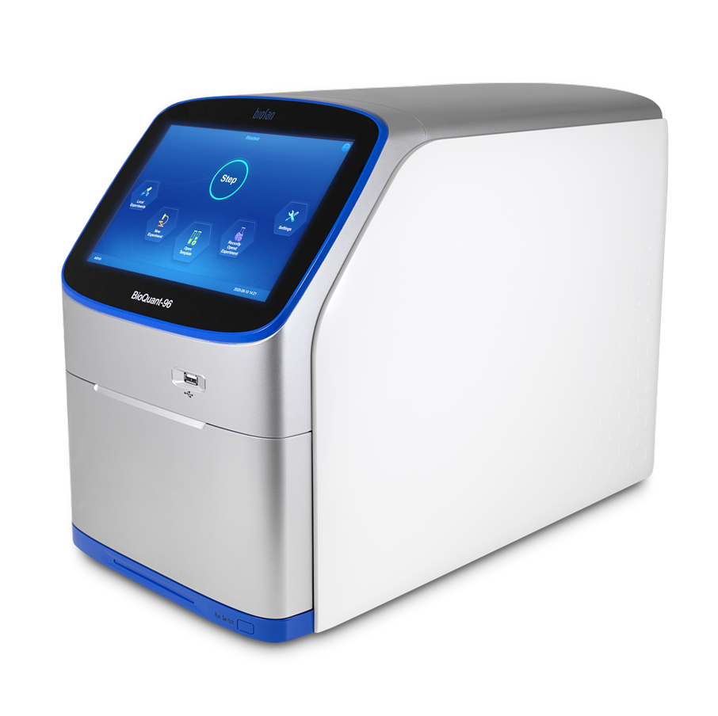
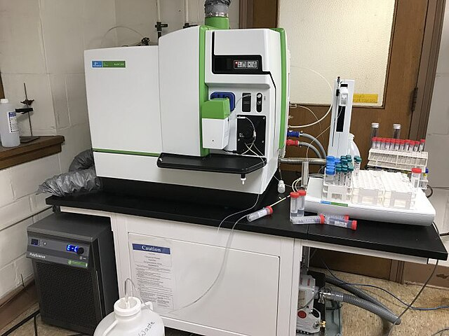
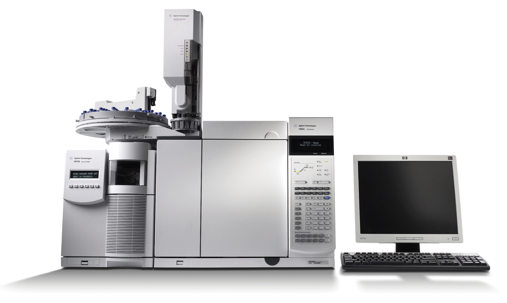

Virtual Tour
About The Laboratory
Laboratorium Riset Terpadu UPN “Veteran” Yogyakarta merupakan fasilitas riset unggulan yang dibangun untuk mendukung kegiatan penelitian lintas disiplin di lingkungan universitas. Pembangunan gedung ini dimulai pada tahun 2019 dan secara resmi diresmikan pada tanggal 28 Juni 2021. Gedung ini terdiri atas empat lantai dan satu rooftop, dengan luas bangunan mencapai kurang lebih 2.800 meter persegi.
Laboratorium ini dirancang sebagai pusat kolaborasi antara fakultas, pusat studi, dan mitra eksternal, baik dari dunia industri maupun lembaga pemerintah. Berlokasi di Kampus Condongcatur, Sleman, gedung ini menjadi simbol komitmen UPN “Veteran” Yogyakarta dalam memajukan riset, inovasi, dan pengembangan teknologi. Dilengkapi dengan fasilitas modern dan sistem manajemen laboratorium berbasis digital, Laboratorium Riset Terpadu berperan penting dalam mendukung kegiatan akademik, program Merdeka Belajar Kampus Merdeka (MBKM), serta pengembangan produk riset yang berdampak nyata bagi masyarakat.
Featured Highlights
Fasilitas Riset Terpadu
Pusat riset yang terintegrasi dengan peralatan canggih untuk mendukung kegiatan penelitian multidisiplin dalam satu tempat.
Teknologi Terkini
Akses ke berbagai perangkat digital mutakhir, sistem pemetaan 3D, alat penginderaan jauh, dan peralatan canggih lainnya untuk meningkatkan ketelitian dan inovasi penelitian.
Ekosistem Kolaborasi
Mendorong kolaborasi antara mahasiswa, dosen, dan peneliti lintas bidang guna menghasilkan proyek riset yang berdampak luas.
Ruang Seminar dan Diskusi Cerdas
Ruang seminar dan diskusi yang modern, dilengkapi sistem digital pintar, ideal untuk presentasi, lokakarya, dan forum ilmiah.
Dukungan untuk Inovasi dan Prototipe
Ruang dan peralatan khusus untuk pengembangan prototipe dan riset eksperimental, mendukung mahasiswa dan peneliti dalam mewujudkan ide menjadi solusi nyata.
Laboratory Instruments
Scanning Electron Microscope + MLA Oxford
Scanning Electron Microscope (SEM) yang dipadukan dengan MLA Oxford merupakan alat canggih yang digunakan untuk mengamati struktur permukaan dan morfologi mikro suatu material hingga tingkat mikroskopis, sekaligus menganalisis komposisi mineralnya secara otomatis. Alat ini bertujuan untuk mendukung identifikasi dan pemetaan mineral dalam sampel padat seperti batuan atau bijih, serta berfungsi dalam penelitian geologi, metalurgi, dan eksplorasi sumber daya alam.
 + MLA Oxford.jpg)
Wavelength Dispersive X-Ray Fluorescence
XRF merupakan alat analisis berbasis sinar-X yang mampu mendeteksi unsur-unsur kimia dalam sampel padat secara cepat dan akurat. Alat ini bertujuan untuk mengidentifikasi dan mengukur konsentrasi unsur mayor maupun minor dalam bahan geologis, industri, dan lingkungan, serta berfungsi sebagai alat analitik non-destruktif dalam kontrol kualitas maupun penelitian material.

Floor-Stand X-Ray Diffractometer
XRD adalah instrumen yang digunakan untuk menganalisis struktur kristal suatu material melalui pola difraksi sinar-X, dengan tambahan perangkat untuk persiapan sampel agar hasil lebih akurat. Alat ini bertujuan mengidentifikasi fasa kristalin, menentukan ukuran partikel, serta struktur mineral, dan berfungsi dalam karakterisasi material padat seperti batuan, keramik, dan polimer.
.jpg)
Mercury Analyzer
Mercury Analyzer digunakan untuk mendeteksi kadar merkuri dalam berbagai jenis sampel, baik cair maupun padat, secara cepat dan sensitif. Alat ini bertujuan untuk menganalisis pencemaran merkuri dalam lingkungan atau produk konsumsi, dan berfungsi sebagai alat pemantau kualitas lingkungan dan kesehatan publik.

TOC Analyzer + CHNS/O Analyzer
Gabungan antara TOC Analyzer dan CHNS/O Analyzer memungkinkan analisis total karbon organik serta unsur karbon, hidrogen, nitrogen, sulfur, dan oksigen dalam satu sistem. Alat ini bertujuan untuk mengukur kandungan unsur organik dan non-organik dalam air, tanah, atau bahan kimia, serta berfungsi untuk mendukung penelitian lingkungan, geokimia, dan bioteknologi.

Microwave Digester
Microwave Digester adalah alat preparasi sampel yang menggunakan pemanasan gelombang mikro untuk melarutkan sampel secara efisien dan homogen. Alat ini bertujuan mempercepat proses destruksi sampel sebelum analisis instrumental seperti ICP-MS, serta berfungsi dalam analisis logam berat dan unsur jejak.

Magnetic Barrier Separator
Magnetic Barrier Separator merupakan alat yang menggunakan medan magnet untuk memisahkan partikel logam feromagnetik dari campuran bahan non-magnetik. Alat ini bertujuan memurnikan sampel mineral atau logam, dan berfungsi dalam proses pengolahan tambang, penelitian mineral, dan daur ulang bahan.

Swell Meter
Swell Meter digunakan untuk mengukur tingkat pembengkakan suatu material, khususnya tanah atau batuan, saat mengalami perubahan kondisi kelembaban. Alat ini bertujuan untuk mengetahui sifat ekspansif material dan berfungsi dalam analisis geoteknik, stabilitas tanah, dan perencanaan konstruksi.

UTM Compression Machine
UTM Compression Machine merupakan alat uji mekanik yang digunakan untuk mengukur kekuatan tarik, tekan, dan lentur berbagai material. Alat ini bertujuan untuk menguji batas kekuatan material bangunan atau logam, dan berfungsi dalam kontrol kualitas, penelitian rekayasa, dan pengembangan bahan baru.
.jpg)
Simultaneous Thermal Analyzer
Simultaneous Thermal Analyzer menggabungkan analisis termogravimetri (TGA) dan diferensial kalorimetri (DSC) untuk memantau perubahan massa dan energi dalam sampel akibat pemanasan. Alat ini bertujuan mengidentifikasi sifat termal suatu material dan berfungsi dalam studi stabilitas termal, dekomposisi, dan transisi fase bahan.

RT-PCR
Reverse Transcription Polymerase Chain Reaction merupakan alat yang menggabungkan proses transkripsi balik RNA menjadi DNA dan penggandaannya untuk mendeteksi materi genetik. Alat ini bertujuan untuk mengidentifikasi ekspresi gen dan keberadaan patogen seperti virus, serta berfungsi dalam diagnostik molekuler, riset biologi, dan deteksi penyakit menular.

ICP-MS
Inductively Coupled Plasma Mass Spectrometry adalah alat spektrometri massa yang menggunakan plasma sebagai sumber ion untuk mendeteksi unsur jejak dalam konsentrasi sangat rendah. Alat ini bertujuan menganalisis unsur logam dan non-logam hingga tingkat part per trillion (ppt), serta berfungsi dalam penelitian lingkungan, biomedis, dan metalurgi.

GC-MS
Gas Chromatography – Mass Spectrometry menggabungkan teknik pemisahan senyawa volatil melalui kromatografi gas dan identifikasinya lewat spektrometri massa. Alat ini bertujuan mengidentifikasi senyawa organik kompleks dalam campuran dan berfungsi dalam analisis forensik, kontrol kualitas makanan, lingkungan, dan obat-obatan.

HPLC
High Performance Liquid Chromatography adalah teknik kromatografi cair bertekanan tinggi yang digunakan untuk memisahkan, mengidentifikasi, dan mengukur kandungan senyawa dalam larutan. Alat ini bertujuan untuk analisis senyawa kimia secara kuantitatif dan kualitatif, serta berfungsi dalam industri farmasi, bioteknologi, dan makanan.
.jpg)
Surface Area Analyzer
Surface Area Analyzer adalah alat yang digunakan untuk mengukur luas permukaan spesifik material padat dengan metode adsorpsi gas. Alat ini bertujuan untuk mengetahui karakter permukaan material seperti katalis atau adsorben, serta berfungsi dalam riset material, kimia permukaan, dan pengembangan teknologi nano.

Spektrofotometer UV-Vis
Spektrofotometer UV-Vis digunakan untuk mengukur absorbansi cahaya di wilayah ultraviolet dan tampak oleh suatu larutan. Alat ini bertujuan menentukan konsentrasi senyawa berdasarkan serapan cahaya dan berfungsi dalam analisis kimia, biokimia, dan kontrol kualitas industri.

Bomb Calorimeter
Bomb Calorimeter merupakan alat yang digunakan untuk mengukur jumlah energi kalor yang dilepaskan dari pembakaran sempurna suatu bahan dalam ruang tertutup. Alat ini bertujuan menentukan nilai kalor bahan bakar atau zat organik, serta berfungsi dalam analisis energi, pangan, dan kimia lingkungan.

Contact Us
117210012@student.upnvyk.ac.id
Phone
Address
Jalan Ringroad Utara, Condongcatur, Depok, Sleman, Yogyakarta, Indonesia